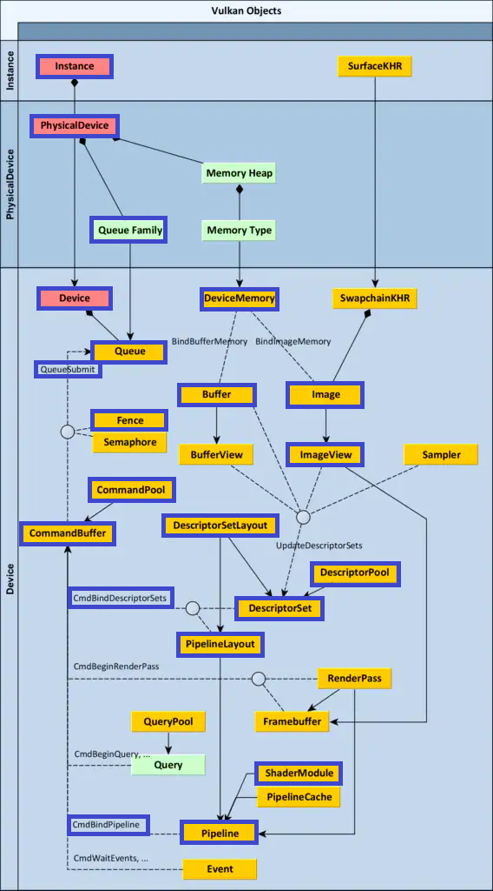
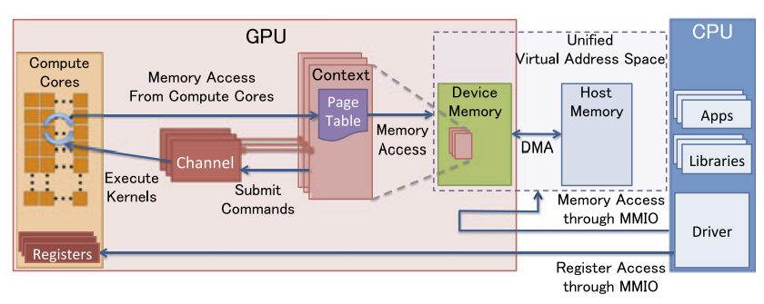
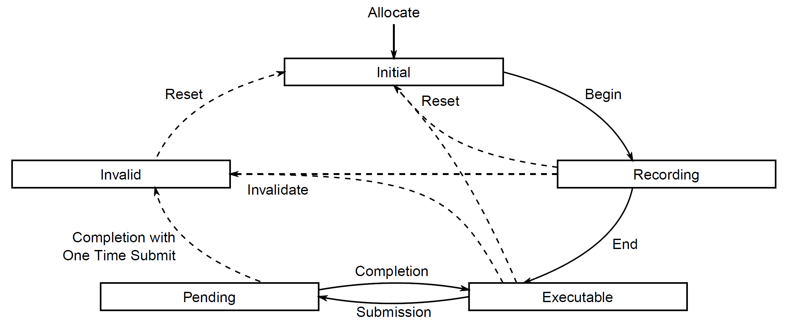
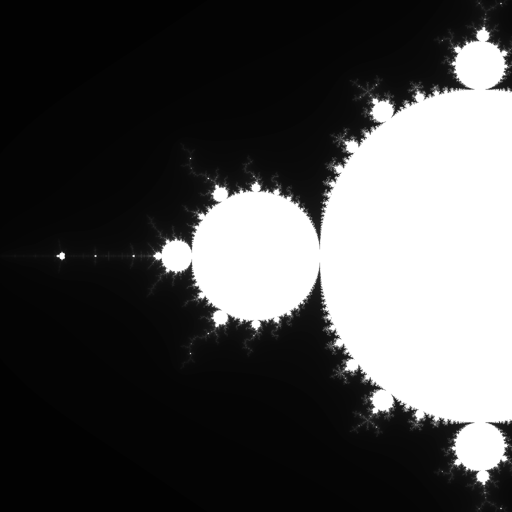

大概可能不难上手的 Vulkan 教程（1） 计算管线
在这里，我们将使用 Rust 作为主要的编程语言开始对 Vulkan API (Home | Vulkan | Cross platform 3D Graphics) 的介绍。当然，许多其他语言都是可用的，例如更古老的 C++ + OpenGL/Vulkan 等等， Python + ModernGL 也是一个非常常见且易学的组合。这里之所以使用 Rust 是因为我喜欢，而且它的许多语言特性使得我们可以更少被语言本身的表达方式所限制，同时减少出错的可能。关于 Rust 的资料不多，可供参考的有 The Rust Programming Language - The Rust Programming Language (rust-lang.org) 以及 CS 110L: Safety in Systems Programming (stanford.edu) 等。在前几篇文章中，我们将首先使用 Vulkano 库 (vulkano - Rust (docs.rs)) 来引入对基本流程的介绍，并且完成两个小例子作为开胃小菜。然后，我们将从 Vulkano 库深挖下去，一方面分析它的原始代码，另一方面尝试引入更多图形学的概念来实现更加复杂的任务。前者更加偏向于底层架构，而后者更加偏向于上层的代码实现。
接下来，我们将假定读者已经对 Rust 的基础语法有所了解，并且已经完成了对 Vulkan SDK 的安装。我们使用的 rustc 版本为 1.66.2，Vulkano 版本为 0.32.3，Vulkan SDK 版本为 1.3.236，均为笔者写作时的最新版本。本文的主要参考资料来自 Vulkano 的官方文档：Vulkano。
下面是我们的主要流程，底图源于 Understanding Vulkan® Objects - GPUOpen。在这一批教程中，我们将涉及到其中的大部分——事实上，是所有画了蓝色方框的部分。

初始化 initialization
我们首先使用 cargo 创建一个工程，称其为 compute_pipeline。为了使用 Vulkano 库，我们首先需要在 Cargo.toml 上添加相关的依赖：
1 | |
接下来就可以在 main.rs 中使用相关的资源了。首先，为了使用 Vulkan API，我们需要载入对应的库。我们首先引入 vulkano::VulkanLibrary，这个类的构造函数会直接调用系统中已有的库并返回一个 Result 型对象。我们首先测试一下是否成功：
1 | |
这个例子在笔者这里输出如下：
1 | |
这里我们测试的目标有两个：一是库的安装是否已经完成，如果没有，程序将会报错；二是现在的库中可用的层（layer）的种类，我们将在这里先引入并对这个概念稍作解释，在以后的深入分析中，我们才会更多地使用它。
我们知道，Vulkan 起到了应用程序（application）和硬件设备（device）的中间层的作用。作为这个中间层的重要组成部分，加载器（loader）是应用程序直接调用 Vulkan API 的入口点。这个加载器就是我们在创建 VulkanLibrary 对象时真正载入的东西，它因系统而异。对于 Windows 而言，它一般是一个叫做 vulkan-1.dll 的动态链接库；对于 Linux 而言，它则一般是 libvulkan.so.1；MacOS 和 Android 与之也不相同。这里我们的 Vulkano 库为我们封装简化了这个过程，使得我们可以简单地载入系统中已有的（事实上，是在环境变量中的）加载器文件。
而层则是由加载器控制的，在应用程序运行过程中注入的组成部分，它在加载器和硬件驱动（driver）之间，可以用来打断、改变或监测 Vulkan 函数调用的行为。因此，我们可以利用它做到很多事情，例如验证 API 的使用、追踪 API 的调用过程、协助完成调试过程、性能检测（profiling）等等。它们是动态载入，可以随时被打开和关闭的。我们在开发和调试过程中，往往会开启一些层来辅助开发，而在应用执行过程中，会将所有层关闭，从而避免对应用程序性能的过多影响。
距离硬件设备最近的一层则是驱动层。这一层通常是由硬件厂商提供的，将 Vulkan API 直接转化到硬件代码或者使用一些软件模拟来完成需要的过程的程序。加载器会识别设备上已有的驱动层程序，并且将代码的执行过程分派（dispatch）给对应的硬件。我们接下来要完成的就是对硬件的抽象。
在创建硬件抽象之前，我们首先需要创建一个 vulkano::Instance 类型的变量，它是一个 Vulkan 上下文（context），其中储存着一些在执行过程中使用的信息。如果你已经了解过 OpenGL，那么你可能对这个概念并不陌生，如果没有，也不要在意，我们会在后面反复看到这个概念的影子。在现在，我们只需要知道这提供了一个介于应用程序和加载器之间的联系。
接下来我们遍历输出所有找到的物理设备（physical device），总的代码如下：
1 | |
你应当看到类似这样的输出：
1 | |
这就是在你的设备上所能找到的所有支持 Vulkan 的物理设备了。但是，为了更好地与物理设备完成通信，我们往往需要抽象出逻辑设备（logical device）来。它表达的是与一个物理设备之间开放的通信过程，这可能是 Vulkan API 中最为重要的概念之一。
执行模型 Execution Model
我们前面说过，Vulkan 用逻辑设备（下面都仿照其 spec 称为设备，device）来抽象一个物理设备。每个设备都能暴露出一个或多个队列（queue），每个队列都可能与其他队列异步执行；这些队列被划分为一个个的族（family），每个族中的队列都有一些类似的特性。我们认为同一个族中的队列是相容的（compatible），为一族队列分配的工作可以被放在任何一个队列上执行。在规范中，我们定义一族队列可以支持的功能有：视频编码/解码（video encode/decode）、图像处理（graphics）、计算（compute）、传输（transfer）、稀疏内存管理（sparse memory management）。看起来有点复杂，是吧？简单地说，就是每个物理设备有一些队列，队列被划分为族，我们要拿一个族来创建逻辑设备。接下来看代码。
我们首先从 instance 暴露给我们的设备中选一个创建物理设备：
1 | |
Rust 语言提醒：为什么不用
physical直接去创建phy_device？因为我们使用了一个for循环遍历这个迭代器，隐式地调用了into_iter()，因此physical已经被借用走了~
下一步我们去观察一下这个物理设备有哪些家族。也是一个遍历过程：
1 | |
在笔者这里它的输出为：
1 | |
就是这样，queue_count 指的是这个族中有几个队列，而 queue_flags 指的是这个族是否满足某些支持的功能。可能对于这些功能你暂且不太明白，但是没关系，我们后面会逐渐涉及。
接下来我们要从里面挑一个能跑图像操作的队列，也就是说 graphics 是 true 的队列。当然，我们已经看见了，事实上就是第一个，但不能这么赖皮，还是得写个搜索的：
1 | |
想都不用想，结果当然是 0。拿到这个队列的序号之后，我们就要去创建对应的逻辑设备了。
1 | |
啊，当然，物理设备很明显，队列数也显然是 1。这里逻辑设备的队列和我们前面讲的物理设备的队列有一点差别，我们在后面会看到，我们是通过逻辑设备的队列向物理设备发放任务的，这个队列在物理设备上的意义暂且不必深究。为了方便我们就直接把它提取出来了：
1 | |
Rust 语言提示：又是借用的问题，记得把上面那条
println先注释掉哦
着色器 Shader
好，我们现在有了一个告诉设备要干什么的方式，尽管我们还没说具体怎么做。那么先停下来考虑一下，我们要让设备来整点啥活。我们知道，GPU 最大的优势在于并行，因此，我们在这里首先完成一个看起来很符合它的要求的任务：绘制一个曼德博罗集（Mandelbrot set）的图像。
为什么说这个任务看起来符合它的要求呢？我们知道，并行性最重要的点在于各个线程（这里这样表述稍微有点不明确，参见下文）之间不能互相依赖，也就是说，A 线程不能用到 B 线程的运行结果，否则的话，A 就必须等到 B 执行完才能接着执行，这样会引起明显的资源上的浪费。而曼德博罗集是一个分形，但是我们不需要按照分型的方式去生成它。只需要检查每一个像素点对应的函数值在多次迭代之后是否发散就行。承此思路，具体的计算在写着色器代码的时候再解释。
接下来需要解释的是着色器代码。着色器代码语言常用的一般就是高级着色器语言（High-level shader language, HLSL）和 OpenGL 着色器语言（OpenGL shader language, GLSL），以及历久弥新的 Renderman 着色器语言（RenderMan shading language, RSL）。在这里我们用的是 Vulkan，它和 OpenGL 同样由 Khronos 这个公益组织维护，因此我们使用的也是 GLSL。这是一种（事实上这三种都是）类 C 的语言，它们的作用就可以看成是可以编译出 GPU 特定代码的编程语言。
当然，Vulkan 相对于 OpenGL 来说当然还是有两把刷子的。它引入了一个中间表示（intermediate representation）SPIR-V，首先在程序编译时就将 GLSL 代码编译成 SPIR-V 的中间表示，然后在运行时将其传给 Vulkan 来转化成架构特定代码并进行执行（其实这种表示在 OpenGL 中现在也获得了支持）。关于 SPIR-V 的指令集和编译过程等等细节我们将留待后面的文章具体讨论。顺便一提，另外两种在 GPU 代码生成过程中常用的中间语言是面向 NVIDIA 产品的 NVVM 和面向 AMD 产品的 ROCDL。
Talk is cheap. Let’s see the codes. 好，下面我们首先来写 GLSL 代码。这里我们要写的是一个计算着色器（compute shader），应该说这才是这篇文章的重点实现部分。但是我们不会过度深挖 GLSL 代码的写法，可以参考 OpenGL SuperBible 之类的参考书，当然，对于需要使用到的内容我们都会边写边做解释，如果不能插入正文的，会像上面对 Rust 的提示一样用小方块来做简要说明。
GLSL 代码的起手式就是要先表明它的版本。计算着色器是在 4.0 版本之后才被引入的，而为了符合时代要求，我们使用 4.60.7 的最新版本来进行介绍，它的版本号是 460，因此我们写：
1 | |
跟在版本号后面的 core 可有可无，它与 compatibility 相对，后者会支持更多的过时的固定管线相关函数，关于管线（pipeline）的内容我们会在后面介绍。下面的代码基本上是抄的 vulkano 官方教程，接下来是布局（layout）的规定：
1 | |
这两句话解释起来稍微有点复杂，具体细节可能要在介绍 GPU 的体系结构之后才能讲清楚，在这里我们先做个概述。首先，我们知道，GPU 的前端是单指令多线程（single instruction multiple thread, SIMT）的模式，这里的每个线程（thread）具备自己的寄存器和 id，但是不具备独立的程序计数器（program counter, PC, 如果你是 Intel 爱好者可能会喜欢叫它指令指针 instruction pointer, IP, 但是这里我们会统一采用前者作为术语）或者栈，也不会被单独调度。要注意，这里的线程和一般操作系统里讲的是不一样的。其实这里更像 SIMD 架构下的车道（lane），指令和执行位置都是完全共享的，但前提和结果不是。
然后，我们把调度单元称为波面（wavefront, NVIDIA 的术语叫它封包 wrap, 我采用的是 AMD 的说法，因为它更形象，具体原因在讲 GPU 体系结构的时候会非常明显）。一个波面是一组线程的集合，每个波面具备自己的 PC，所以我们可以想象这样一个场景：不同的线程像水波一样同步向前，它们有一些具备相同的波面因而构成了一个连续的形体。
好，我们现在介绍了两层抽象，线程、波面，接下来是第三层，工作组（work groups, 或者线程组 thread groups，但是这容易造成混淆，因为它组织的事实上是波面而不是线程）。工作组的结构不像上面两者是硬件决定的，它事实上是由我们在着色器代码中定义的。但它也不是看起来那么随意，我们所有一个工作组中的波面都需要在同一个着色器单元（shader unit）中执行。因为工作组的一个特征是，它们具备共享内存（thread group shared memory, TGSM）。工作组的组织可以由局部大小（local size）来确定，为了编程的方便它有三个维度，最终每次执行的线程数是三者的乘积，我们的第一行语句设置的就是这个玩意。一个代码实现层面上的小提示是，事实上有默认值 1，所以上面的代码里 local_size_z 也是可以不用设置的。
第一行解释完了，绕晕了没？因为没有解释硬件实现，所以这些概念的引入显得非常生硬。在现在，实用起见我们只需要知道两件事：
- 每次调用一遍着色器代码都是一个线程；
- 我们在这里设定了同时执行并且具备共享内存的工作组规模。
接下来我们看下一行。计算着色器输出的硬件模型与后面要介绍的着色器有些不同，它是一个无序访存视图（unordered access view, UAV）。这个玩意长得就像是一块缓冲区，但是它带有一些额外的特征。第一，正如它的名字暗示的，它是无序访问的，也就是说，一旦一条指令要求访问它，它会被立刻访问。这意味着，当我们写 compute shader 时，必须保证各个线程之间的数据没有时间上的依赖关系，为什么这很重要呢？因为它具备的第二个特性，随机访存（random access）。各个线程都可以写到 UAV 的任意位置上去，这意味着我们的两个线程可以写在同一个位置。因此，如果我们有线程 A 和线程 B 往同一个位置上写不同的结果，那么最终出来的是谁的结果只有执行它的显卡才能知道。第三个特性是原子操作，我们会在后面讲架构的时候详细讨论。
这些事情和我们的第二行代码有什么关系呢？在现在看来，答案是没有关系。我们只定义了这个变量是 uniform writeonly image2D 类型的 img 也就是说一个全局、只写的二维图像以及它的描述子（descriptor）。关于描述子的内容我们放在下一节介绍，现在我们只要知道，我们是把它当成了程序的输出来用就行。注意，计算着色器本身没有输出，这只是被当成了一个输出。
然后我们进入了 main 函数，这是我们的入口点：
1 | |
啊，没啥好看的不是吗，代码应该都已经明明白白地写在这里了。这里需要解释的是：
gl_GlobalInvocationID是自带的传入参数，标志着这个线程在调用的哪个位置，在我们这个例子里，就是它调用的是哪个点；- 我们把模长大于 4.0 作为发散的标准，不然算起来就永无止境了；
- 其他函数的含义应当很明确，可以参考 GLSL 4 - docs.gl
我们不会去解释每个变量和每一步操作，当然，否则的话这个教程就永远写不完了。着色器代码的写法可以参考很多已有的教程，反正基本上都能用。举几个简单的例子：WebGL2 Shaders and GLSL (webgl2fundamentals.org) 是基于 WebGL2 的介绍，LearnOpenGL - Shaders 是基于 OpenGL 的介绍，Creating a Context - ModernGL 5.8.0 documentation 基于 ModernGL，等等，我的收藏夹中有大量相关的内容，虽然用的 API 不同，但只要是 GLSL 的写法，都可以参考。最经典的纸质参考书的话，可能就是 OpenGL SuperBible 了（中译名为 OpenGL 超极宝典，超土不是吗）。
好了，下一步是把着色器代码引入到我们的程序中，为了偷懒我们这里使用 vulkano_shaders 这个库，先在 Cargo.toml 的 dependency 项中加入：
1 | |
按照本教程的惯例，这当然也是写作时的最新版本。它的用法参考 vulkano_shaders - Rust (docs.rs)，我们这里就直接在程序里调用它了：
1 | |
当然，着色器代码被放在了 shaders/cshader.comp 下，这是为了避免代码过于脏乱，你也可以模仿示例把它嵌入在文件里面，这都无所谓。
管线 Pipeline
Pipeline 这个词想必读者都不陌生。一般的翻译是流水线，或者装配链，不妨想象汽车厂的工人每个人都在一个固定位置上处理传送带上送来的工件。硬件上的流水线早在 CPU 上就已经被引入了，我们大概已经熟知它的四个典型阶段：取指（fetch），解码（decode），执行（execute），写回（write back）。其中前面两个阶段在 Intel 的术语里被称为前端（front end），后面两个阶段被称为后端（backend）。前端完成的操作就是取指令然后将指令解码成微指令（micro-operation, μop），过程中的重要部件是分支预测器（branch predictor）；后端则是将微指令分派（dispatch）到对应的执行单元，并完成读写寄存器堆和缓存的操作，其中主要的操作就是寄存器重命名（register renaming）和重排序（reorder）。
如果上面这些概念陌生的话或许得去参考一些体系结构的相关资料，毕竟我们在后面提到 GPU 的体系架构是会预设对前面这些内容有所了解。但是现在这都不是重点，我们只需要知道一点：我们在 GPU 上也有一些流水线，这就行了。
事实上，在图形学中我们更常把这种流水线称为是一个管线。它可以被想象成一个水管，指令像水流一样在里面流过——当然，这和上面波面的那个比喻很同意，这很好。接下来我们要做的是往这个管线里面灌水，也就是说，填充指令。因此，我们首先要创建一个流水线：
1 | |
好了，弄完了，看起来很简单不是吗？我们要声明的东西就是，这个管线在哪个设备上，我们要往里面塞什么着色器代码，着色器代码的入口点是什么，剩下的几个参数在现在还不必理会。
我们这里要问，管线的布局（layout）是怎么指定的？因为我们知道，毕竟我们的管线是在 GPU 上的，它将不可避免地和 CPU 代码产生交互。这个交互就要求流水线知道自己要处理的数据长什么样，这就是我们所谓的布局。事实上，按照 Vulkan 的 spec，在创建流水线的时候是需要约定布局的，而且在约定的实现要求中，我们要求它和着色器的布局规定一致（VUID-VkComputePipelineCreateInfo-layout-00703）。这也给了我们一个提示，或许我们可以去着色器的编译结果中找答案。事实上，我们可以在这段的前面插入下面的代码：
1 | |
我们暂时不去深究 Vulkano 在这里实现的细节。但是我们注意到，它的输出是：
1 | |
这里提示我们，在编译完成之后，事实上着色器已经能给出描述子（descriptor）的细节了。这事实上也就是我们在创建流水线过程中所需的东西。在下面一节里，我们就会详细介绍这一部分内容。
数据迁移 Data Transfer
看看我们现在有什么，一个 CPU，上面在跑 Rust 代码；一个 GPU，上面在跑（其实还没呢，是要跑）着色器代码。好，为了不让它们各自为政，接下来我们要做的一件事情是搭起 GPU 和 CPU 之间的桥梁。我们知道，GPU 上是具备一块内存的，它与 CPU 之间的通信是一个比较大的速度瓶颈。暂且不管速度或是什么，我们先让程序能跑起来，为了创建一个输入，我们需要引入缓冲区（buffer）的概念。从这里开始，我会更加专注于介绍编程模型而无视底层的硬件实现，因为这里的硬件实现复杂到绝对足以再为这篇文章扩大一倍的篇幅。并且，从这里开始，因为我们用的已经是更新版的 vulkano，我们的代码也会开始与他的标准教程有所不同（标准教程使用的 0.31.0 事实上没有引入设备内存这个概念）。
首先我们要引入设备内存（device memory）这个概念，它指的是设备可见的内存。我们说的设备内存可能由其与主从设备的关系不同产生分别，最常见的几种有仅限设备上的（device-local）、设备上主机可见的（device-local, host visible），主机上可见的（host-local, host visible），基本上都能顾名思义。注意，主机上可见的设备内存当然也是设备上可见的。
为了分配设备内存，我们首先需要一个内存分配器（memory allocator）：
1 | |
很单纯，很友好。这里我们用了最标准的内存分配器，如果需要逐帧分配的话，这个分配器其实不够快，需要用 FastMemoryAllocator，但暂时嘛，能跑就行。
Rust 语言提示：猜猜为什么要用
clone呢？当然又是借用问题~
我们已经在着色器的部分提到过，我们实际上的输出是一个图像（image）。这个玩意当然应该是在设备内存上的。因此，我们首先来造一个图像：
1 | |
但是我们要非常注意，我们不能保证图像一定是连续存储的。它的存储方式完全是设备特定的，在一些极端情况，如下图中，我们的 GPU 甚至也是有虚拟内存的（图片来自：GPUvm: GPU Virtualization at the Hypervisor, Yusuke Suzuki, Shinpei Kato, Hiroshi Yamada and Kenji Kono，这篇文章在后面介绍 GPU 体系结构时也会再次提及）。因此，我们绝对不能直接按照连续内存的方式让着色器去访问这样一张图像，我们需要添加一个中间层。

这个中间层就被称为图像视图（image view），我们创建它。当然，Vulkano 也已经为我们准备好了方便的接口：
1 | |
然而，图像视图是这个图像在着色器眼中的样子。在主机眼中，它依然是一个不听话的家伙，没有那么容易访问。因此，我们要创建一个主机能访问的缓冲区，然后将它复制过来：
1 | |
这里我们设置了 transfer_dst 属性为 true。这意味着我们要把这块空间当成一次传输操作的目的地。现在可用的缓冲区一般有三种，这里我们用的 CpuAccessibleBuffer 指的是主机可见的；而第三个参数 host_cached 设为 false 则是指不在 CPU 访问的内存范围内缓存 GPU 上的数据；最后一项则是数据源，就这么大的全零数组。因此我们可以看出，这个缓冲区是用来存储输出的——对主机可见的一块等同于图像大小的内存。
好。我们已经把内存分配全部完成了。下一个问题是填上上一节挖下的坑：描述子。你可能会问，我们已经有了内存，有了代码，让代码直接运行不就完了吗？但是注意，在着色器代码里我们可没有声明内存，这块内存现在对于着色器而言还是未知的。因此，我们需要让计算流水线知道自己应该在哪做计算。为了完成这个任务，我们需要分配一个描述子集（descriptor set）。当然咯，首先我们要创建一个分配器，这个分配器的目的是更好地管理描述子池（descriptor pool），创建的方法和上面基本上差不多：
1 | |
然后再使用这个分配器去整一个描述子集：
1 | |
因为偷懒，我们直接用了管线创建时的描述子集布局作为这里的布局。这是很正常而且没什么问题的，回忆一下管线创建，我们的布局来自于着色器，而这里的描述子集对应的也是着色器，嗯，完美。在这里我们暂时不会深挖描述子集到底是什么东西以及它的表达方式，只要知道，我们现在的 set 就存有管线所需的所有描述子集信息就行。
任务分派 Dispatch
终于快结束了。在完成最后一步之前，让我们先看看最开始的那一张图。我们首先创建了实例（instance），找到了物理设备（physical device），然后从里面拿到了设备（device），从一族队列（queue family）中抽象出了队列（queue）。接下来我们写完了着色器模块（shader module），建立了一个管线（pipeline）并且为了通信从设备内存（device memory）中抽出了一个缓冲区（buffer）和一个图像（image）；为了图像被着色器访问我们又给出了一个图像视图（image view），再从描述子池（descriptor set）中分配了一个描述子集（descriptor set）。对比一下，我们现在还没有完成的东西就剩下从管线到队列这个看上去很漫长的过程了。
那么接下来要创建的东西就不用说了，是所谓的命令缓冲区（command buffer）。命令缓冲区是一片用来记录一连串需要提交给队列执行的操作的空间，从命令池（command pool）中分配。当然，每一个命令缓冲区都有自己的生命周期（lifecycle），下面这张来自 spec 的图把它表达的很明确了：

我们这里要做的过程就是：首先从命令池中把它分配出来（initial），然后向里面记录东西（recording），达到可执行状态（executable），接下来单次提交（one time submit），进入等待状态（pending），执行完成之后销毁（invalid），也就是说完成一个顺时针的循环。接下来我们来看代码，首先当然又是一个分配器：
1 | |
嗯，全是默认值。然后用它来创建一个命令缓冲区：
1 | |
看最上面的图，我们要给它绑定管线和描述子集，然后往里面填东西。Vulkano 的解决方案是使用一个 builder 类来构造它：
1 | |
我们要再次提到前面说的工作组（忘了？在着色器那里）这个概念，在执行任务过程中需要告诉设备我们需要几个工作组，当然，这里就是 [1024 / 8, 1024 / 8, 1] 。然后我们指示在完成之后把图像复制到缓冲区去。最后我们把任务提交上去，丢给队列：
1 | |
注意这里我们有用到一个同步策略。我们首先创建一个“现在”的设备，告诉它：接下来先在队列上执行命令缓冲区里的任务，然后等待所有任务完成（fence）并冲刷管线（flush），再发出示意信号（signal），再告诉“未来”的设备等到信号传来。这里的实现细节比较复杂，也涉及比较多同步和异步的知识，但是框架很统一，基本上所有程序都是这样来写的，所以暂时就这样形象地记住这段框架就行。
最后呢，我们要把图片存下来，我们用的是 0.24.5 的 image 库，就像这样：
1 | |
我们应当能够得到这样的图像：

总结 Conclusion
到现在为止，我们完成了第一个 Vulkan 程序的书写，尽管依赖了 Vulkano 库，并且所有代码我都已经给出，但我认为这对于初学者而言依然会是一个不小的挑战，也能带来足够的成就感。如果你没能成功完成这部分代码，我已经将代码放在了 GitHub 上（vulkan-tutorial/compute_pipeline at main · FrightenedFoxCN/vulkan-tutorial (github.com)），可供对照参考。再次声明本文相关的代码均来自于 Vulkano 官方文档的例子的改编并感谢官方提供的好例子。在本文中，你应当已经了解了：
- Vulkan 程序的基本框架；
- 计算管线和计算着色器的写法；
- 在最开始的图中涉及的种种概念；
我在本文中挖的坑有：
- GPU 本身的体系结构，包括处理单元和内存模型；
- 着色器的编译流程和中间 IR SPIR-V；
- 硬件设备之间的同步和异步执行流；
在下一篇文章中，这些坑一个都不会被填上的（逃）。下一次，我们会完全偏离 Vulkano 官方教程的轨道，开始书写我们的第一个有交互的用户程序并且创建一个图形管线（graphics pipeline）。这意味着我们首先要把在最开始出现的流程图中的剩余部分讲完，并且引入大量关于图形管线的结构介绍，这应当是下一篇文章的重点——毕竟，静态的图像可不够吸引人，尽管它像曼德博罗集这样扣人心弦。至于这些坑，我们会在几篇开胃小菜性质的文章之后（大概是今年中旬）才会开始一点一点补上。
顺便一提，如果是初学者，最好先过一遍 Rust 的语法和 GLSL 的语法，毕竟这些在我的叙述中不会占有太大的篇幅，参考教程都已经在文中给出，你也可以到谷歌等搜索引擎获取更多的信息。或许我会写一个 Rust 的速通教程，但是谁知道呢？
参考资料
纸质材料
OpenGL Superbible 7ed, Graham Sellers, Richard Wright, Nicholas Haemel (OpenGL SuperBible (github.com))
General-Purpose Graphics Processor Architecture Tor M.Aamodt, Wilson Wai Lun Fung, Timothy G. Rogers（Morgan&Claypool Publishers - Synthesis Lectures On Computer Architecture）
Real-Time Rendering 4ed, Tomas Akenine-Möller, Eric Haines, Naty Hoffman, Angelo Pesce, Sebastien Hillaire, Michael Iwanicki
链接
关于 Vulkan 的文档和现有的介绍：
LunarXchange (lunarg.com)
Introduction - Vulkan Tutorial (vulkan-tutorial.com)
Introduction - Vulkan Tutorial (Rust) (kylemayes.github.io)
Vulkan in 30 minutes (renderdoc.org)
Vulkan Tutorial (github.com)
[API without Secrets: Introduction to Vulkan Part 0: Preface (intel.com)](https://www.intel.com/content/www/us/en/developer/articles/training/api-without-secrets-introduction-to-vulkan-preface.html)*
Developing Vulkan® applications - GPUOpen
关于 GLSL 和 SPIR-V
The OpenGL® Shading Language, Version 4.60.7 (khronos.org)
SPIR Overview - The Khronos Group Inc
SPIR-V Specification (khronos.org)
Shader Compilation - OpenGL Wiki (khronos.org)
Compute Shader - OpenGL Wiki (khronos.org)
关于 GPU 的架构及其与系统的交互
A trip through the Graphics Pipeline 2011, part 13 | The ryg blog (wordpress.com)
Exploring the GPU Architecture | VMware
1. GPU Architecture — Dive into Deep Learning Compiler 0.1 documentation (d2l.ai)
Understanding the architecture of a GPU | by Vitality Learning | CodeX | Medium
GPU segments - Windows drivers | Microsoft Learn
这一部分介绍非常深入的并不多，最关键的还是第一份 blog，这是对图形管线最经典的介绍之一。其余的架构细节就只能参考上面提到的 Aamodt 的纸质书、生产商给的白皮书以及一些比较新的论文，在后面提到这一部分的时候我会重新充分引证。
以及所有文中所引用的资源。